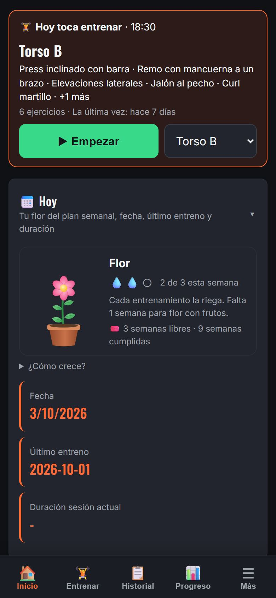
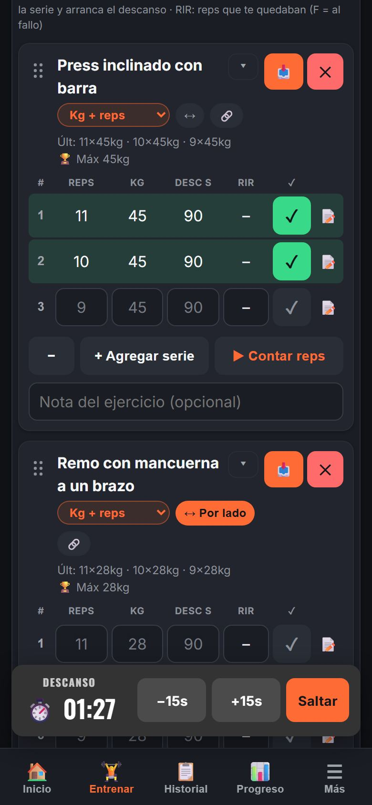
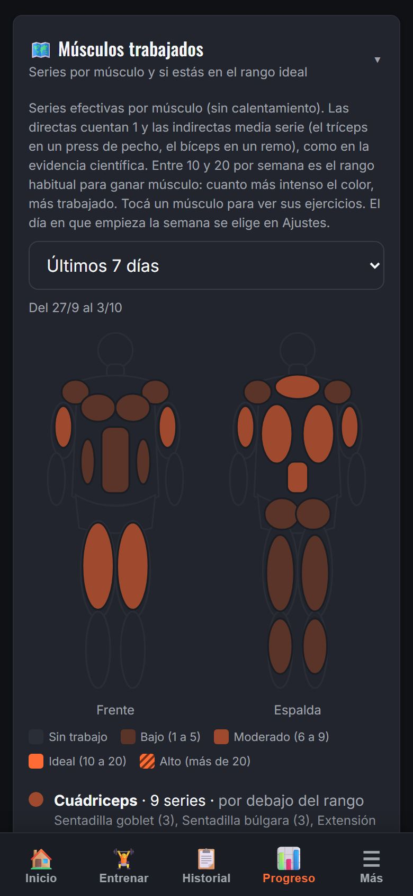
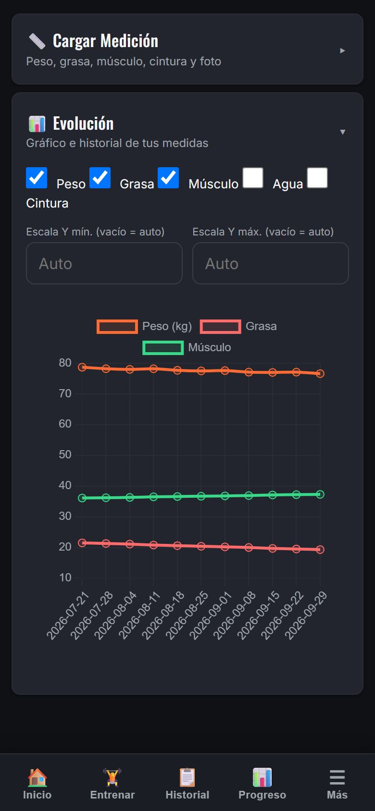
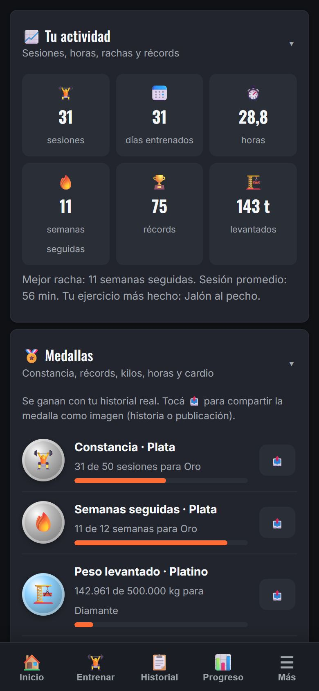

Abrís la app y sabés qué toca
Armás tu plan semanal con días, horarios y la rutina de cada día. La app te avisa, te muestra qué entrenar hoy y lo empezás con un toque. Cada semana cumplida hace crecer tu flor.
Esō Agōn · la lucha interior
Registrá tus series en segundos, descansá con aviso por voz y mirá tu progreso semana a semana. Sin cuenta, sin anuncios y sin conexión: tus datos quedan en tu celular.
Android: versión de prueba (se instala a mano). iPhone: abrila en Safari y tocá Compartir → Agregar a inicio.





Pensada para usarla con una mano, entre serie y serie.
Armás tu plan semanal con días, horarios y la rutina de cada día. La app te avisa, te muestra qué entrenar hoy y lo empezás con un toque. Cada semana cumplida hace crecer tu flor.
Ves lo que hiciste la última vez, ajustás peso y reps, y marcás la serie. El descanso arranca solo, con aviso por voz a los 10 segundos y al terminar. En Android, te avisa aunque la pantalla esté apagada.
Un mapa del cuerpo cuenta tus series efectivas por músculo y te dice si estás en el rango que la evidencia recomienda para ganar músculo. Si un ejercicio se estanca, te sugiere qué cambiar.
Peso, grasa, músculo, agua y cintura en un mismo gráfico, con fotos de progreso para comparar. Todo queda guardado solo en tu celular.
Constancia, semanas seguidas, kilos levantados y récords personales. Cada logro se comparte como imagen para tus historias.
Marcá las tres series. Mirá cómo arranca el descanso y qué pasa cuando superás tu marca.
Tocá ✓ en la primera serie.
Programas armados que te dicen qué peso y cuántas reps hacer cada día.
Importá tus entrenamientos de Hevy, Strong o Fitbod con un archivo CSV.
Bloques de trabajo y descanso con aviso por voz y sonido.
Marca la cadencia de cada repetición. Hasta podés grabar tus propios avisos.
Te dice qué discos poner de cada lado según tu barra.
Agrupá ejercicios y registrá por lado los que se hacen con un brazo o una pierna.
Un archivo con todos tus datos, protegido con contraseña si querés. Para cambiar de celular sin perder nada.
Botones grandes, alto contraste, colores para daltonismo, tema claro u oscuro, kg o lb.
La app guarda todo en tu celular. No tiene servidores con tus datos, no usa publicidad ni rastreadores y técnicamente no puede conectarse a servicios de terceros. Algo sale de tu dispositivo solo cuando vos lo decidís: un backup, una imagen o un comentario.
En desarrollo. Las funciones que usen datos fuera de tu celular van a pedir tu consentimiento antes.
La app de Android, con instalación desde la tienda.
Tus datos en todos tus dispositivos, si querés.
Para que tu entrenador te arme las rutinas y siga tu progreso desde la compu.
Sugerencias orientativas de rutinas, calorías y comidas para personas adultas y sanas.
No reemplazan la consulta con un médico ni con un licenciado en nutrición matriculado.
Sí. Todas las funciones de hoy son gratis y sin anuncios. Más adelante puede haber un plan pago con funciones extra, pero lo que ya usás no se va a cobrar.
No. Abrís la app y empezás. Tus datos quedan en tu celular.
Sí. Después de abrirla una vez, funciona sin conexión, ideal para gimnasios sin señal.
En Android, descargá el instalador desde esta página, o abrí la app en Chrome y tocá "Instalar". En iPhone, abrila en Safari, tocá Compartir y después "Agregar a inicio".
Sí, desde Hevy, Strong o Fitbod: exportás el historial como CSV y lo importás en Ajustes.
Hacés un backup en Ajustes → Datos, lo guardás (por ejemplo, en tu Drive) y lo cargás en el celular nuevo.
No. Es una herramienta para registrar y organizar tu entrenamiento. Antes de empezar a entrenar o de subir la intensidad, consultá a un médico, sobre todo si tenés alguna condición de salud.